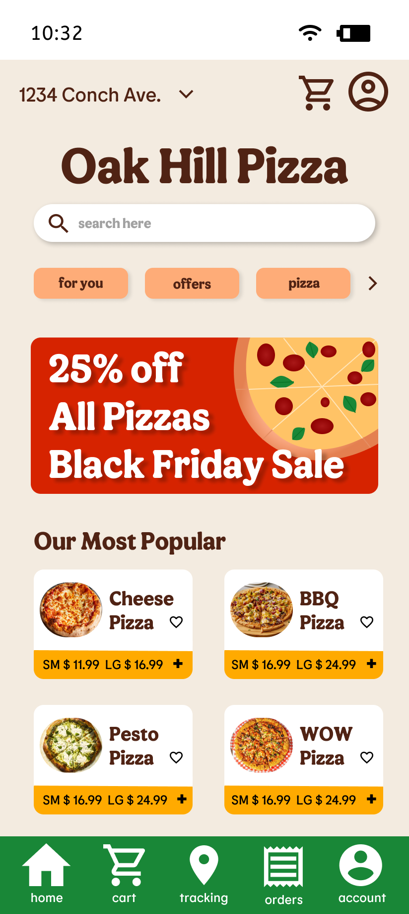
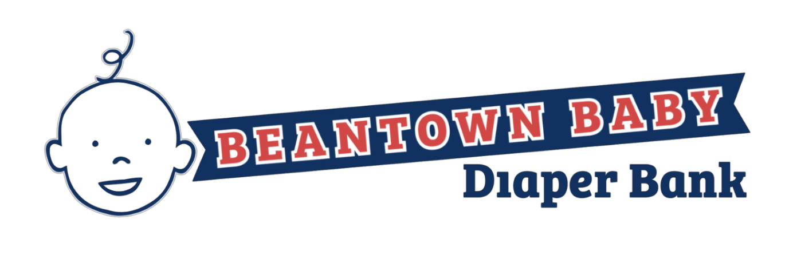
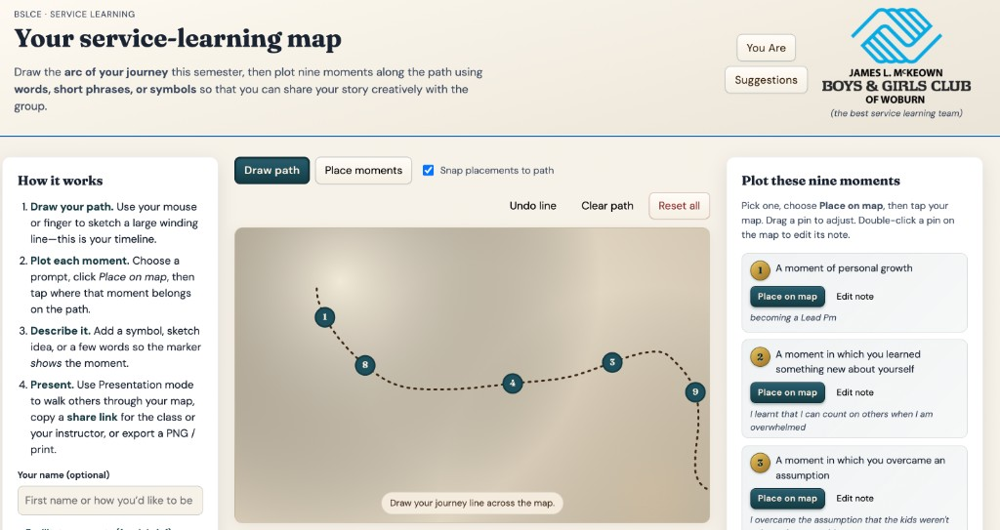
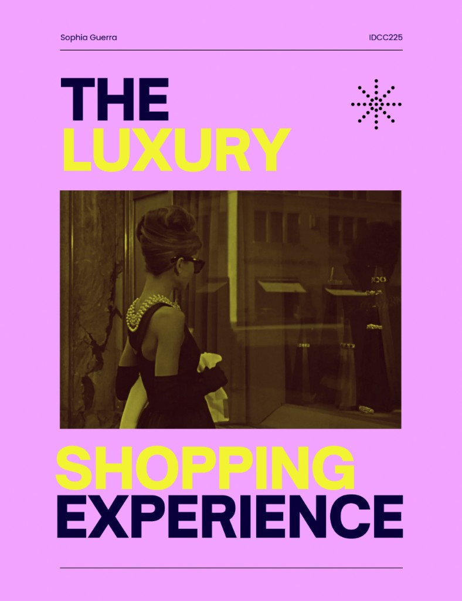
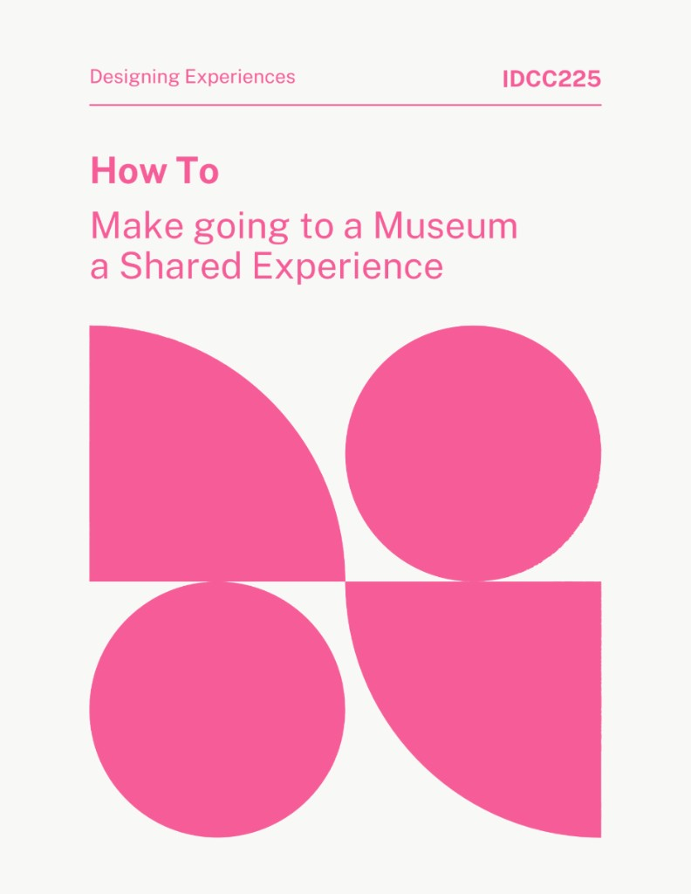
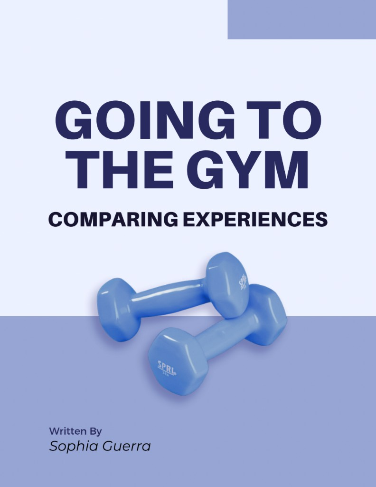
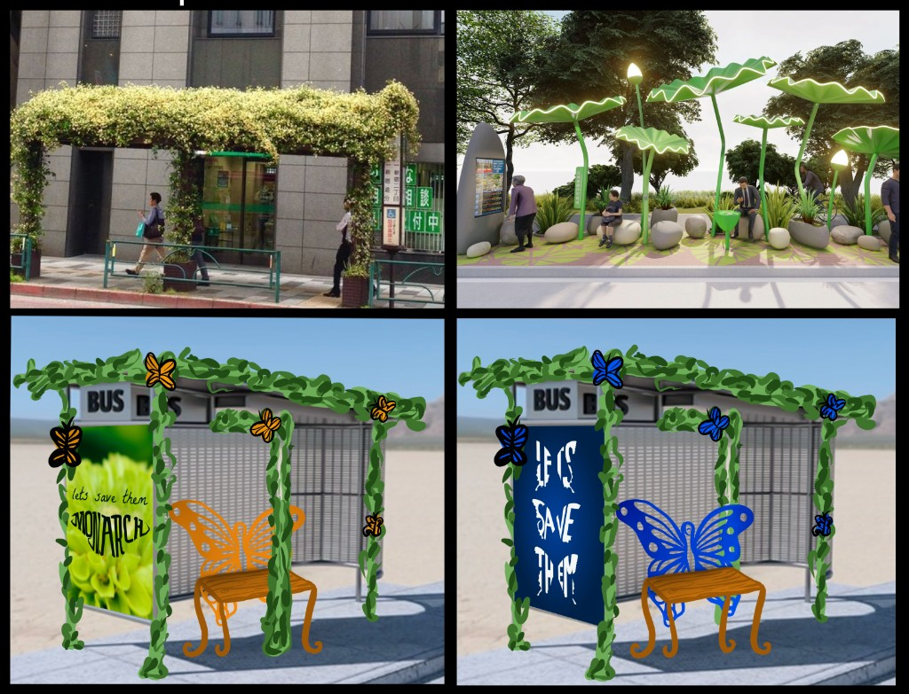

All of my projects.
UX research, strategy, design, and creative storytelling from academic, work, and personal projects.
Academic projects

XD 370 – Web Design Work

Beantown Baby Diaper Bank

BSLCE Reflection Map — Woburn

The Luxury Shopping Experience

Museum as a Shared Experience

Going to the Gym — Comparing Experiences
